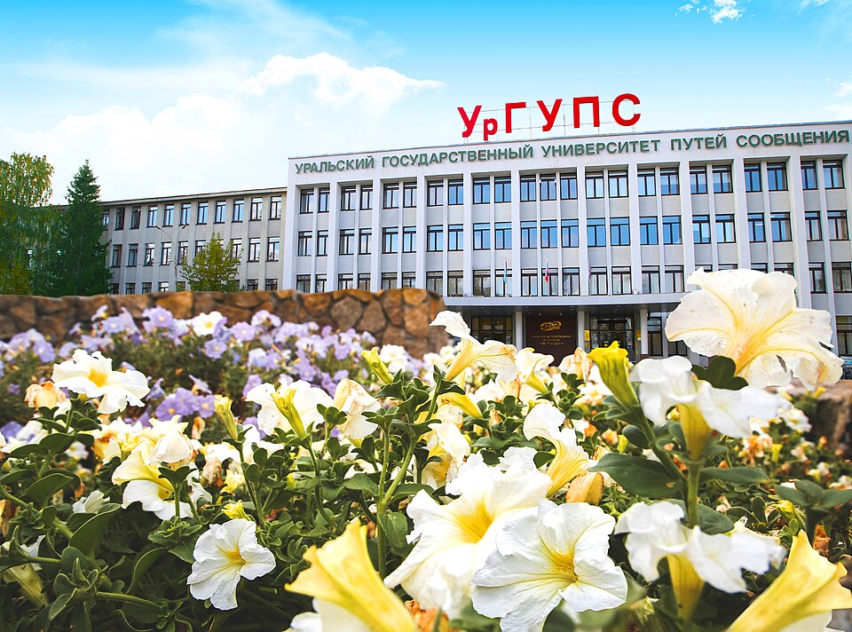

Прием документов на бюджет
Подача заявления и комплекта документов на бюджетные места.

Приемная кампания
Ключевые даты, вступительные испытания, специальности, условия обучения.
Основные даты
Перечень документов для поступления:
Подача заявления и комплекта документов на бюджетные места.
Собеседования по иностранному языку и специальной дисциплине.
Документы можно подать в течение расширенного периода приема.
Вступительные испытания проходят после завершения приема документов.
Вступительные испытания
Каждое испытание оценивается по 100-балльной шкале. Для поступающих одновременно на бюджет и на места с оплатой обучения испытания сдаются один раз.
Английский, немецкий или французский по вашему выбору.
Программа вступительного испытанияСоответствует выбранной научной специальности.
Программы по специальным дисциплинамНеудовлетворительная оценка ниже 60 баллов за любое вступительное испытание не позволяет поступить даже на места с оплатой обучения.
Индивидуальные достижения
Каждое достижение учитывается один раз. Максимальный балл за индивидуальные достижения — 100.
| Индивидуальное достижение | Количество баллов |
|---|---|
|
Выступления на научных конференциях, симпозиумах, форумах, чтениях, соревнованиях в соответствии с направлением выбранной научной специальности*:
вузовский, региональный, ведомственный, городской, районный уровень
2
всероссийский уровень
3
международный уровень
5
|
|
|
Научные публикации на предыдущем уровне образования в соответствии с направлением выбранной научной специальности**:
в сборниках вуза, журналах РИНЦ, в системе elibrary.ru
5
в журналах ВАК, в зарубежных изданиях, входящих в базы Scopus и (или) Web of Science
15
|
|
| Наличие именных стипендий при обучении на программах специалитета или магистратуры | 4 |
| Наличие диплома с отличием на предыдущем уровне образования | 6 |
|
Диплом призера заключительного этапа конкурса научных работ, олимпиад, в том числе диплом победителя Всероссийского инженерного конкурса, в соответствии с направлением выбранной научной специальности:
региональный или всероссийский уровень
10
международный уровень
17
|
|
| Наличие на предыдущем уровне образования зарегистрированного патента в соответствии с направлением выбранной научной специальности | 5 |
| Документ, подтверждающий сдачу кандидатского экзамена по истории и философии науки на «отлично» | 14 |
| Документ, подтверждающий сдачу кандидатского экзамена по иностранному языку на «отлично» | 14 |
* Профиль выбранной специальности не учитывается в соревнованиях, участие в которых инициировано Центром инноваций и технологий УрГУПС.
** Учитываются только публикации, проиндексированные в соответствующих базах на дату подачи заявления о приеме.
Условия для аспирантов
Целевая аспирантура
Научные специальности
Кафедра: Естественнонаучные дисциплины
Тимофеева Галина АдольфовнаКафедра: Мехатроника
Тарасян Владимир СергеевичКафедра: Информационные технологии и защита информации
Зырянова Татьяна ЮрьевнаКафедра: Электроснабжение транспорта
Ковалев Алексей АнатольевичКафедра: Мировая экономика и логистика
Сирина Нина ФридриховнаКафедра: Путь и железнодорожное строительство
Парахненко Инна ЛеонидовнаКафедра: Вагоны
Колясов Константин МихайловичКафедра: Управление эксплуатационной работой
Тимухина Елена НиколаевнаКафедра: Мировая экономика и логистика
Гашкова Людмила ВячеславовнаКафедра: Экономика транспорта
Рачек Светлана ВитальевнаКонтакты